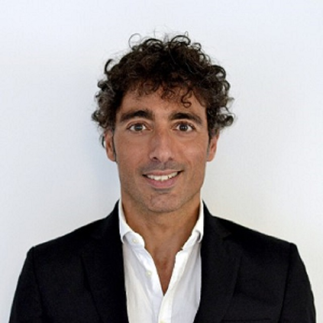
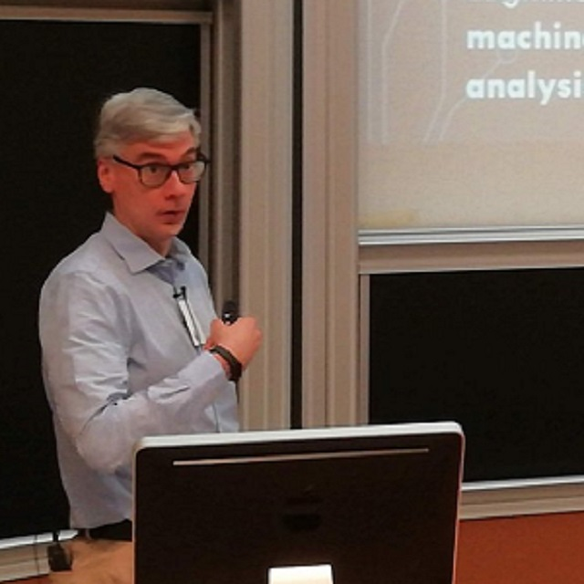

About
AI4DT&CP
The availability of easy-to-deploy sensors and the general advances in the Internet of Things (IoT) technology have led to the emergence of new applications that seamlessly blend the physical and digital worlds. Notwithstanding this trend, there are still open issues. A major one, due to the heterogeneity of the several models involved, is dealing with the complexity of the physical world to develop and deploy intelligent services that continuously perceive and learn from data coming from the environment.
The idea gained traction among both academic institutions and industry players, revitalising the Digital Twin technology that enables the creation of virtual replicas of physical objects by mirroring their properties, data and behaviors and enabling new intelligent and augmented functionalities such as modelling, simulation, and cognitive capabilities.
We believe that Artificial Intelligence (AI) will transform the field of Digital Twin technology by enabling the creation of intelligent virtual replicas that may offer smart services and lead to adaptive AI in cyber-physical environments.
Overall, AI can be used to enhance the performance, safety, and security of Digital Twin and cyber-physical systems by making them more intelligent, adaptive, and autonomous. The results can be better control, optimisation, and prediction of the Cyber-Physical systems.
Digital Twin and cyber-physical systems can be enhanced with AI in several ways since AI enables real-time monitoring and control of physical systems with the possibility of delivering intelligent services with applications in several domains, such as:
Predictive modelling: AI-powered digital twins can predict the behaviour of physical systems under different conditions, helping to identify potential issues or inefficiencies in the physical system before they occur.
Anomaly detection: AI-powered digital twins can analyse sensor data from the physical system in real-time, using machine learning techniques to identify anomalies or deviations from normal behaviour.
Digital Human Replica: Building virtual replicas of humans that reproduce and model both outer and inner aspects of a human being, such as physical and physiological characteristics, personality, sensitivities, thoughts and skills.
Optimisation: AI-powered digital twins can analyse sensor data and other inputs to optimise the performance of the physical system (e.g., by adjusting the control parameters to minimise energy consumption or maximise production efficiency).
Autonomous control: AI-powered digital twins can be used to control a physical system autonomously, using sensor data and other inputs to make real-time decisions.
Safety and security: AI-powered digital twins can be used to monitor and analyse sensor data to detect security threats or unsafe conditions in the physical system and to trigger appropriate responses.
Big Data Applications: Big data frameworks can be leveraged to make sense of huge data collections and provide the digital twins with further features, analysis, graphs.
At the same time, incorporating machine learning models into digital twin systems can be critical when monitoring or controlling critical systems.
Machine Learning Operations (MLOps) approaches are attracting increasing interest to ensure that intelligent models are deployed robustly and reliably, especially when exploiting Continual Learning or Reinforcement Learning techniques.
The workshop aims to bring together experts in the fields of Artificial Intelligence, Digital Twin technology, and Cyber-Physical systems to explore the latest developments and best practices in the use of AI-based digital twins for a wide range of cyber-physical services and applications.
Predictive modelling: AI-powered digital twins can predict the behaviour of physical systems under different conditions, helping to identify potential issues or inefficiencies in the physical system before they occur.
Anomaly detection: AI-powered digital twins can analyse sensor data from the physical system in real-time, using machine learning techniques to identify anomalies or deviations from normal behaviour.
Digital Human Replica: Building virtual replicas of humans that reproduce and model both outer and inner aspects of a human being, such as physical and physiological characteristics, personality, sensitivities, thoughts and skills.
Optimisation: AI-powered digital twins can analyse sensor data and other inputs to optimise the performance of the physical system (e.g., by adjusting the control parameters to minimise energy consumption or maximise production efficiency).
Autonomous control: AI-powered digital twins can be used to control a physical system autonomously, using sensor data and other inputs to make real-time decisions.
Safety and security: AI-powered digital twins can be used to monitor and analyse sensor data to detect security threats or unsafe conditions in the physical system and to trigger appropriate responses.
Big Data Applications: Big data frameworks can be leveraged to make sense of huge data collections and provide the digital twins with further features, analysis, graphs.
Machine Learning Operations (MLOps) approaches are attracting increasing interest to ensure that intelligent models are deployed robustly and reliably, especially when exploiting Continual Learning or Reinforcement Learning techniques.
The workshop aims to bring together experts in the fields of Artificial Intelligence, Digital Twin technology, and Cyber-Physical systems to explore the latest developments and best practices in the use of AI-based digital twins for a wide range of cyber-physical services and applications.
Topics of interest
Topics of interest of AI4DT&CP include, but are not limited to, the following:
What-if scenarios with Cyber-Physical applications
MLOps in Cyber-Physical systems
Digital Twin intelligence management
Digital Twins modelling for AI for physical augmentation
Cyber-Physical application and MLOps for anomaly detection
Digital Twins for synthetic data generation in Cyber-Physicall applications
Predictive Maintenance in Cyber-Physical systems
Intelligent Digital Twins for optimisation use cases (Smart cities, smart buildings, environmental monitoring)
Digital human replica with AI
Cyber-Physical application with AI in healthcare
Digital Twins for continual learning scenarios
Reinforcement Learning in Cyber-Physical applications
Program
The workshop will be held on August 19th during IJCAI 2023.
August 19th
Welcome and Opening Remarks
Towards Machine Learning-Based Digital Twins in Cyber-Physical Systems
Felix Theusch, Lukas Seemann, Achim Guldner, Stefan Naumann and Ralph Bergmann.
Joint Hypergraph Rewiring and Memory-Augmented Forecasting Techniques in Digital Twin Technology
Sagar Srinivas Sakhinana, Shivam Gupta, Krishna Sai Sudhir Aripirala and Venkataramana Runkana.
Coffee break
Neuro-Symbolic Digital Twins for Precision and Predictive Public Health
Gayo Diallo
Re-imagining health and well-being in low resource African settings using an augmented AI system and a 3D digital twin
Deshendran Moodley and Christopher Seebregts
Closing remarks
Important dates
Submission deadline: May 2,2023 May 21,2023
Paper notification: June 4,2023
Camera-ready: July 5,2023
Workshop: August 19-21,2023
Submission
Papers can be submitted as PDF using EasyChair:
https://easychair.org/my/conference?conf=ai4dtcpPapers must comply with the CEURART paper style (1 column) and can fall in one of the following categories:
Full research papers(minimum 7 pages)
Short research papers(4-6 pages)
Position papers(2 pages)
The CEURART template can be found on Overleaf at:
https://it.overleaf.com/latex/templates/template-for-submissions-to-ceur-workshop-proceedings-ceur-ws-dot-org/wqyfdgftmcfwAccepted papers (after blind review of at least 3 experts) will be included in a volume of the CEUR Workshop Proceedings. We are also planning to organize a special issue and the authors of the most interesting and relevant papers will be invited to submit and extended manuscript.
At least one author of each accepted paper must travel to the IJCAI venue in person
Multiple submission of the same paper to more IJCAI workshops are forbidden
Organization
Workshop organizers
Gianfranco Lombardo
University of Parma, Italy
Marco Picone
University of Modena and Reggio Emilia, Italy

Diego Reforgiato Recupero
University of Cagliari, Italy

Giuseppe Vizzari
University of Milano-Bicocca, Italy
Program Committee
Panos Pardalos - University of Florida, USA
Phu Nguyen - SINTEF, Norway
Mattia Pellegrino - University of Parma, Italy
Maria Chiara Magnanini, Polytechnic of Milan, Italy
Ralph Bergmann - University of Trier, Germany
Seonho Park - Georgia Tech, USA
Claudio Ferrari - University of Parma, Italy
Alam Mehwish, Telecom Paris, France
Marco Lippi - University of Modena and Reggio Emilia, Italy
George Adosoglou - University of Florida, USA
Alessandro Ricci - University of Bologna, Italy
Torben Weis, University Duisburg-Essen, Germany
Fabrizio De Vita - University of Messina, Italy
Samy El-Tawab, James Madison University, Harrisonburg, USA
Tomaso Fontanini - University of Parma, Italy
Ruben Alonso - R2M Solution s.r.l., Italy
Carlo Giannelli - University of Ferrara, Italy